shot_image = "./white.png"
ShotData{
id = 0 //Dummy Shot
rect = (0,0,0,0)
render = ALPHA
alpha=0
collision = 12
}
ShotData{
id = 1
rect = (0, 0, 8, 8)
render = ALPHA
alpha = 64
collision = 12
}
ShotData{
id = 2
rect = (0, 0, 4, 16)
render = ADD_ARGB
alpha = 64
collision = 12
}
#TouhouDanmakufu[Player]
#ScriptVersion[3]
#ID["DNHTut"]
#Title["Danmakufu Tutorials - Player Script"]
#Text["Example player script built for the Danmakufu Tutorials"]
#ReplayName["DNHTut"]
let objPlayer = GetPlayerObjectID();
let csd = GetCurrentScriptDirectory();
let MAX_GRAZE_PARTICLES = 32;
let curr_graze_particles = 0;
let playerdead = false;
let count = 0;
@Initialize {
LoadPlayerShotData(csd ~ "shotdata.txt");
ObjPlayer_AddIntersectionCircleA1(objPlayer, 0, 0, 1, 20);
DrawPlayer;
PlayerShot;
CreateOption(-1);
CreateOption(1);
MagicCircle;
RenderHitbox;
}
@MainLoop {
count += 1;
yield;
}
@Event {
alternative(GetEventType)
case(EV_GRAZE) {
// Add sound here
if (curr_graze_particles < MAX_GRAZE_PARTICLES) {
CreateGrazeParticle;
}
}
case(EV_PLAYER_SHOOTDOWN) {
playerdead = true;
DeathExplosion;
// Optional: run a task to delete bullets in a radius of the player
}
case(EV_PLAYER_REBIRTH) {
playerdead = false;
SetPlayerInvincibilityFrame(240);
SetPlayerSpell(3); // Note: You can also use max(#, GetPlayerSpell) to not destroy extra bombs from prior life
// Optional: run a task to delete bullets in a radius of the player
}
case(EV_REQUEST_SPELL) {
let spell = GetPlayerSpell();
if (spell >= 1) {
SetScriptResult(true);
SetPlayerSpell(spell - 1);
if (GetVirtualKeyState(VK_SLOWMOVE) != KEY_HOLD && GetVirtualKeyState(VK_SLOWMOVE) != KEY_PUSH) {
UnfocusedSpell();
} else {
FocusedSpell();
}
} else {
SetScriptResult(false);
}
}
}
task DrawPlayer {
let path = csd ~ "white.png";
ObjPrim_SetTexture(objPlayer, path);
ObjSprite2D_SetSourceRect(objPlayer, 0, 0, 15, 15);
ObjSprite2D_SetDestCenter(objPlayer);
loop {
if (playerdead) {
ObjRender_SetAlpha(objPlayer, 0);
} else {
ObjRender_SetAlpha(objPlayer, 255);
}
if(GetVirtualKeyState(VK_LEFT) == KEY_PUSH || GetVirtualKeyState(VK_LEFT) == KEY_HOLD) {
ObjRender_SetAngleZ(objPlayer, -15);
} else if(GetVirtualKeyState(VK_RIGHT) == KEY_PUSH || GetVirtualKeyState(VK_RIGHT) == KEY_HOLD) {
ObjRender_SetAngleZ(objPlayer, 15);
} else {
ObjRender_SetAngleZ(objPlayer, 0);
}
yield;
}
}
task RenderHitbox {
let path = csd ~ "white.png";
let visible = false;
let objHitbox = ObjPrim_Create(OBJ_SPRITE_2D);
ObjPrim_SetTexture(objHitbox, path);
ObjSprite2D_SetSourceRect(objHitbox, 0, 0, 5, 5);
ObjSprite2D_SetDestRect(objHitbox, -5, -5, 5, 5);
ObjRender_SetColor(objHitbox, 255, 0, 0);
Obj_SetRenderPriority(objHitbox, 0.31); // Player renders at 30
let objHitbox2 = ObjPrim_Create(OBJ_SPRITE_2D);
ObjPrim_SetTexture(objHitbox2, path);
ObjSprite2D_SetSourceRect(objHitbox2, 0, 0, 5, 5);
ObjSprite2D_SetDestRect(objHitbox2, -3, -3, 3, 3);
Obj_SetRenderPriority(objHitbox2, 0.31); // Player renders at 30
loop {
if (visible && (playerdead || GetVirtualKeyState(VK_SLOWMOVE) != KEY_HOLD)) { // Shift to invisible
visible = false;
Obj_SetVisible(objHitbox, false);
Obj_SetVisible(objHitbox2, false);
} else if (!visible && !playerdead && GetVirtualKeyState(VK_SLOWMOVE) == KEY_HOLD) { // Shift to visible
visible = true;
Obj_SetVisible(objHitbox, true);
Obj_SetVisible(objHitbox2, true);
}
ObjRender_SetPosition(objHitbox, GetPlayerX(), GetPlayerY(), 1);
ObjRender_SetPosition(objHitbox2, GetPlayerX(), GetPlayerY(), 1);
yield;
}
}
// Creates an option to the side of the player
task CreateOption(dir) {
let path = csd ~ "white.png";
let unfocdist = 64; // Distance to the player when unfocused
let focdist = 32; // Distance to the player when focused
let transitionfr = 15; // Number of frames for option transition when focused/unfocused state switches
let currdist = unfocdist;
let objOption = ObjPrim_Create(OBJ_SPRITE_2D);
ObjPrim_SetTexture(objOption, path);
ObjSprite2D_SetSourceRect(objOption, 0, 0, 11, 11);
ObjSprite2D_SetDestCenter(objOption);
loop {
if (playerdead) {
ObjRender_SetAlpha(objOption, 0);
} else {
ObjRender_SetAlpha(objOption, 255);
}
if (GetVirtualKeyState(VK_SLOWMOVE) != KEY_HOLD && GetVirtualKeyState(VK_SLOWMOVE) != KEY_PUSH) { // Unfocused
if (currdist < unfocdist) {
currdist += (unfocdist - focdist)/transitionfr;
}
} else { // Focused
if (currdist > focdist) {
currdist -= (unfocdist - focdist)/transitionfr;
}
}
ObjRender_SetPosition(objOption, GetPlayerX() + currdist*dir, GetPlayerY(), 1);
if (!playerdead && GetVirtualKeyState(VK_SHOT) != KEY_FREE) {
if (count % 12 == 0) {
if (GetVirtualKeyState(VK_SLOWMOVE) != KEY_HOLD && GetVirtualKeyState(VK_SLOWMOVE) != KEY_PUSH) { // Unfocused
CreatePlayerShotA1(ObjRender_GetX(objOption), ObjRender_GetY(objOption), 12, 270, 6, 1, 1);
} else { // Focused
CreatePlayerShotA1(ObjRender_GetX(objOption), ObjRender_GetY(objOption), 6, 270, 6, 2, 2);
}
}
}
yield;
}
}
task PlayerShot {
loop {
if (!playerdead && GetVirtualKeyState(VK_SHOT) != KEY_FREE) {
if (count % 6 == 0) {
CreatePlayerShotA1(GetPlayerX() - 4, GetPlayerY() - 8, 10, 270, 4, 1, 1);
CreatePlayerShotA1(GetPlayerX() + 4, GetPlayerY() - 8, 10, 270, 4, 1, 1);
if (GetVirtualKeyState(VK_SLOWMOVE) != KEY_HOLD && GetVirtualKeyState(VK_SLOWMOVE) != KEY_PUSH) { // Unfocused
CreatePlayerShotA1(GetPlayerX(), GetPlayerY() - 8, 12, 250, 4.5, 1, 1);
CreatePlayerShotA1(GetPlayerX(), GetPlayerY() - 8, 12, 260, 4.5, 1, 1);
CreatePlayerShotA1(GetPlayerX(), GetPlayerY() - 8, 12, 280, 4.5, 1, 1);
CreatePlayerShotA1(GetPlayerX(), GetPlayerY() - 8, 12, 290, 4.5, 1, 1);
} else { // Focused
CreatePlayerShotA1(GetPlayerX(), GetPlayerY() - 8, 12, 260, 3, 1, 1);
CreatePlayerShotA1(GetPlayerX(), GetPlayerY() - 8, 12, 265, 3, 1, 1);
CreatePlayerShotA1(GetPlayerX(), GetPlayerY() - 8, 12, 275, 3, 1, 1);
CreatePlayerShotA1(GetPlayerX(), GetPlayerY() - 8, 12, 280, 3, 1, 1);
}
}
}
yield;
}
}
task CreateGrazeParticle {
let path = csd ~ "white.png";
let objParticle = ObjPrim_Create(OBJ_SPRITE_2D);
let startx = GetPlayerX();
let starty = GetPlayerY();
let angle = rand(0, 360);
let anglecomponents = [cos(angle), sin(angle)];
let speed = rand(0, 4) + rand(0, 8);
let frames = 30; // Frames for the particle to exist
let size = rand(1, 3);
curr_graze_particles += 1;
ObjPrim_SetTexture(objParticle, path);
ObjSprite2D_SetSourceRect(objParticle, 0, 0, size, size);
ObjSprite2D_SetDestCenter(objParticle);
ascent(i in 0..frames) {
ObjRender_SetX(objParticle, startx + anglecomponents[0] * i);
ObjRender_SetY(objParticle, starty + anglecomponents[1] * i);
if (i > frames/2) {
ObjRender_SetAlpha(objParticle, 255 - (i - frames/2)*255/(frames/2));
}
yield;
}
Obj_Delete(objParticle);
curr_graze_particles -= 1;
}
task CreateExpandingInvertSquare(angle) {
let path = csd ~ "white.png";
let objSquare = ObjPrim_Create(OBJ_SPRITE_2D);
ObjPrim_SetTexture(objSquare, path);
ObjRender_SetBlendType(objSquare, BLEND_INV_DESTRGB);
ObjSprite2D_SetSourceRect(objSquare, 0, 0, 2048, 2048);
ObjSprite2D_SetDestCenter(objSquare);
ObjRender_SetPosition(objSquare, GetPlayerX(), GetPlayerY(), 0);
ObjRender_SetAngleZ(objSquare, angle);
ascent(i in 0..120) {
// Scale goes from 0 to 1
ObjRender_SetScaleXYZ(objSquare, i/120, i/120, i/120);
yield;
}
Obj_Delete(objSquare);
}
task CreateDeathParticle {
let path = csd ~ "white.png";
let objSquare = ObjPrim_Create(OBJ_SPRITE_2D);
let angle = rand(0, 360);
let anglecomponents = [cos(angle), sin(angle)];
let speed = rand(0, 8);
let accel = speed/100;
let startx = GetPlayerX();
let starty = GetPlayerY();
let currx = startx;
let curry = starty;
ObjPrim_SetTexture(objSquare, path);
ObjSprite2D_SetSourceRect(objSquare, 0, 0, 8, 8);
ObjSprite2D_SetDestCenter(objSquare);
ObjRender_SetPosition(objSquare, startx, starty, 0);
let rotangles = [rand(0, 360), rand(0, 360), rand(0, 360)];
let rotspeeds = [rand(0, 6), rand(0, 6), rand(0, 6)];
let downframes = GetPlayerDownStateFrame();
ascent(i in 0..downframes/2) {
currx += anglecomponents[0] * speed;
curry += anglecomponents[1] * speed;
ObjRender_SetPosition(objSquare, currx, curry, 0);
rotangles[0] = rotangles[0] + rotspeeds[0];
rotangles[1] = rotangles[1] + rotspeeds[1];
rotangles[2] = rotangles[2] + rotspeeds[2];
ObjRender_SetAngleXYZ(objSquare, rotangles[0], rotangles[1], rotangles[2]);
speed -= accel;
yield;
}
// Use respawn location to determine movement back towards it
let dx = GetStgFrameWidth()/2 - currx;
let dy = GetStgFrameHeight() - 32 - curry;
ascent(i in 0..downframes/2) {
currx += dx/(downframes/2);
curry += dy/(downframes/2);
ObjRender_SetPosition(objSquare, currx, curry, 0);
rotangles[0] = rotangles[0] + rotspeeds[0];
rotangles[1] = rotangles[1] + rotspeeds[1];
rotangles[2] = rotangles[2] + rotspeeds[2];
ObjRender_SetAngleXYZ(objSquare, rotangles[0], rotangles[1], rotangles[2]);
yield;
}
Obj_Delete(objSquare);
}
task DeathExplosion {
CreateExpandingInvertSquare(0);
CreateExpandingInvertSquare(45);
loop(30) {
CreateDeathParticle;
}
loop(5) {yield;}
CreateExpandingInvertSquare(0);
CreateExpandingInvertSquare(45);
}
task MagicCircle {
let imgpath = GetCurrentScriptDirectory() ~ "./u3l29sample.png";
let NUM_VERTEX = 32;
let MC_RADIUS = 96;
let scale = 1;
let listRadius = [];
loop(NUM_VERTEX) {
listRadius = listRadius ~ [0];
}
let objCirc = ObjPrim_Create(OBJ_PRIMITIVE_2D);
ObjPrim_SetTexture(objCirc, imgpath);
ObjPrim_SetPrimitiveType(objCirc, PRIMITIVE_TRIANGLESTRIP);
ObjPrim_SetVertexCount(objCirc, NUM_VERTEX);
ObjRender_SetScaleXYZ(objCirc, scale, scale, 1);
ascent(iVert in 0..NUM_VERTEX / 2){
let left = iVert * 240/NUM_VERTEX;
let indexVert = iVert * 2;
ObjPrim_SetVertexUVT(objCirc, indexVert + 0, left, 125);
ObjPrim_SetVertexUVT(objCirc, indexVert + 1, left, 141);
}
let angleRender = 0;
let frameInvOld = 0;
loop { // Magic circle never deletes
let frameInv = GetPlayerInvincibilityFrame();
if (frameInv <= 0) { // Not Invincible
Obj_SetVisible(objCirc, false);
} else {
Obj_SetVisible(objCirc, true);
if (frameInv > 240) { // We will use an arbitrary cutoff of 240 frames for our 'max' scale
frameInv = 240;
}
scale = frameInv/240;
ObjRender_SetScaleXYZ(objCirc, scale, scale, 1);
angleRender += 360 / NUM_VERTEX / 8;
ascent(iVert in 0..NUM_VERTEX / 2) {
let indexVert = iVert * 2;
let angle = 360 / (NUM_VERTEX / 2 - 1) * iVert;
let vx1 = listRadius[indexVert] * cos(angle);
let vy1 = listRadius[indexVert] * sin(angle);
ObjPrim_SetVertexPosition(objCirc, indexVert + 0, vx1, vy1, 0);
let vx2 = listRadius[indexVert+1] * cos(angle);
let vy2 = listRadius[indexVert+1] * sin(angle);
ObjPrim_SetVertexPosition(objCirc, indexVert + 1, vx2, vy2, 0);
let drOut = (MC_RADIUS - listRadius[indexVert]) / 8;
listRadius[indexVert] = listRadius[indexVert] + drOut;
let rRateIn = 1 - 0.12;
let drIn = (MC_RADIUS * rRateIn - listRadius[indexVert + 1]) / 8;
listRadius[indexVert + 1] = listRadius[indexVert + 1] + drIn;
}
ObjRender_SetPosition(objCirc, GetPlayerX(), GetPlayerY(), 1);
ObjRender_SetAngleZ(objCirc, angleRender);
}
yield;
}
Obj_Delete(objCirc);
}
task CreateUnfocusedSpellSquare(ID) {
let path = csd ~ "white.png";
let rad = 0; // Tracks size
let objspell = ObjSpell_Create;
ObjSpell_Regist(objspell);
ObjPrim_SetPrimitiveType(objspell, PRIMITIVE_TRIANGLEFAN);
ObjPrim_SetVertexCount(objspell, 4);
ObjPrim_SetTexture(objspell, path);
ObjRender_SetBlendType(objspell, BLEND_ADD_ARGB);
ObjPrim_SetVertexUVT(objspell, 0, 0, 0);
ObjPrim_SetVertexUVT(objspell, 1, 512, 0);
ObjPrim_SetVertexUVT(objspell, 2, 512, 512);
ObjPrim_SetVertexUVT(objspell, 3, 0, 512);
ObjPrim_SetVertexPosition(objspell, 0, -rad, -rad, 0);
ObjPrim_SetVertexPosition(objspell, 1, rad, -rad, 0);
ObjPrim_SetVertexPosition(objspell, 2, rad, rad, 0);
ObjPrim_SetVertexPosition(objspell, 3, -rad, rad, 0);
ObjRender_SetAngleZ(objspell, ID*7);
ascent(i in 0..30) {
ObjRender_SetPosition(objspell, GetPlayerX(), GetPlayerY(), 0);
ObjSpell_SetIntersectionCircle(objspell, GetPlayerX(), GetPlayerY(), rad*2^0.5);
ObjSpell_SetDamage(objspell, 2);
ObjPrim_SetVertexPosition(objspell, 0, -rad, -rad, 0);
ObjPrim_SetVertexPosition(objspell, 1, rad, -rad, 0);
ObjPrim_SetVertexPosition(objspell, 2, rad, rad, 0);
ObjPrim_SetVertexPosition(objspell, 3, -rad, rad, 0);
ObjPrim_SetVertexAlpha(objspell, 0, 255 - i*255/30);
ObjPrim_SetVertexAlpha(objspell, 1, 255 - i*255/30);
ObjPrim_SetVertexAlpha(objspell, 2, 255 - i*255/30);
ObjPrim_SetVertexAlpha(objspell, 3, 255 - i*255/30);
rad += 256/30; // Reaches 256 in 30 frames
yield;
}
Obj_Delete(objspell);
}
task UnfocusedSpell {
SetForbidPlayerShot(true);
let objManage = GetSpellManageObject(); // Start of spell
SetPlayerInvincibilityFrame(240); // Should last duration of spell + some buffer time afterwards
ascent(i in 0..20) {
CreateUnfocusedSpellSquare(i);
loop(6) {yield;}
}
loop(30) {yield;} // Wait for all spell objects to delete before ending spell
Obj_Delete(objManage); // End of spell
SetForbidPlayerShot(false);
}
task CreateFocusedSpellSquare(ID, dir) {
let path = csd ~ "white.png";
let rad = 0; // Tracks size
let rotdist = 64;
let objspell = ObjSpell_Create;
ObjSpell_Regist(objspell);
ObjPrim_SetPrimitiveType(objspell, PRIMITIVE_TRIANGLEFAN);
ObjPrim_SetVertexCount(objspell, 4);
ObjPrim_SetTexture(objspell, path);
ObjRender_SetBlendType(objspell, BLEND_ADD_ARGB);
ObjPrim_SetVertexUVT(objspell, 0, 0, 0);
ObjPrim_SetVertexUVT(objspell, 1, 64, 0);
ObjPrim_SetVertexUVT(objspell, 2, 64, 64);
ObjPrim_SetVertexUVT(objspell, 3, 0, 64);
ObjPrim_SetVertexPosition(objspell, 0, -rad, -rad, 0);
ObjPrim_SetVertexPosition(objspell, 1, rad, -rad, 0);
ObjPrim_SetVertexPosition(objspell, 2, rad, rad, 0);
ObjPrim_SetVertexPosition(objspell, 3, -rad, rad, 0);
let currx = GetPlayerX();
let curry = GetPlayerY();
ascent(i in 0..60) {
// Base location + gradual expansion + rotation
currx = GetPlayerX() + rotdist/60*i * cos(270 + 360/60*i*dir);
curry = GetPlayerY() + rotdist/60*i * sin(270 + 360/60*i*dir);
ObjRender_SetPosition(objspell, currx, curry, 0);
ObjSpell_SetIntersectionCircle(objspell, GetPlayerX(), GetPlayerY(), rad*2^0.5);
ObjSpell_SetDamage(objspell, 1);
ObjPrim_SetVertexPosition(objspell, 0, -rad, -rad, 0);
ObjPrim_SetVertexPosition(objspell, 1, rad, -rad, 0);
ObjPrim_SetVertexPosition(objspell, 2, rad, rad, 0);
ObjPrim_SetVertexPosition(objspell, 3, -rad, rad, 0);
ObjRender_SetAngleZ(objspell, ID*7 + 360/60*i);
if (rad < 32) { // Reaches 32 in 60 frames
rad += 32/60;
}
yield;
}
let ascendspeed = 12;
ascent(i in 0..60) {
currx = GetPlayerX() + 32*sin(i*360/30*dir);
curry = GetPlayerY() - rotdist - ascendspeed*i;
ObjRender_SetPosition(objspell, currx, curry, 0);
ObjSpell_SetIntersectionCircle(objspell, currx, curry, rad*2^0.5);
ObjSpell_SetDamage(objspell, 1 + 4/60*i);
ObjPrim_SetVertexPosition(objspell, 0, -rad, -rad, 0);
ObjPrim_SetVertexPosition(objspell, 1, rad, -rad, 0);
ObjPrim_SetVertexPosition(objspell, 2, rad, rad, 0);
ObjPrim_SetVertexPosition(objspell, 3, -rad, rad, 0);
ObjRender_SetAngleZ(objspell, ID*7 + 360/60*i);
if (rad > 16) { // Reaches 16 in 30 frames
rad -= 16/30;
}
yield;
}
Obj_Delete(objspell);
}
task FocusedSpell {
SetForbidPlayerShot(true);
let objManage = GetSpellManageObject(); // Start of spell
SetPlayerInvincibilityFrame(420); // Should last duration of spell + some buffer time afterwards
ascent(i in 0..20) {
CreateFocusedSpellSquare(i, 1);
loop(3) {yield;}
CreateFocusedSpellSquare(i, -1);
loop(3) {yield;}
}
loop(120) {yield;} // Wait for all spell objects to delete before ending spell
Obj_Delete(objManage); // End of spell
SetForbidPlayerShot(false);
}
| white.png | u3l29sample.png |
|---|
|  |